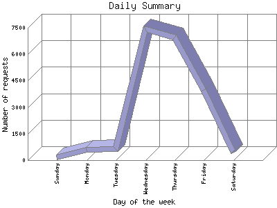

The Daily Summary identifies the level of activity as a total for each day of the week. This summary also compares the level of activity on weekdays and weekends as a total for the report time frame.

| Day of the week | Number of requests | Number of page requests | |
|---|---|---|---|
| 1. | Sunday | 146 | 17 |
| 2. | Monday | 608 | 16 |
| 3. | Tuesday | 626 | 55 |
| 4. | Wednesday | 7,430 | 37 |
| 5. | Thursday | 6,936 | 60 |
| 6. | Friday | 3,977 | 31 |
| 7. | Saturday | 443 | 24 |
| Total Weekdays | 19,577 | 199 | |
| Total Weekend | 589 | 41 | |
This report was generated on July 19, 2006 03:35.
Report time frame July 12, 2006 05:31 to July 18, 2006 23:50.
| Web statistics report produced by: | |
| analog 5.1 | Report Magic for Analog 2.10 |